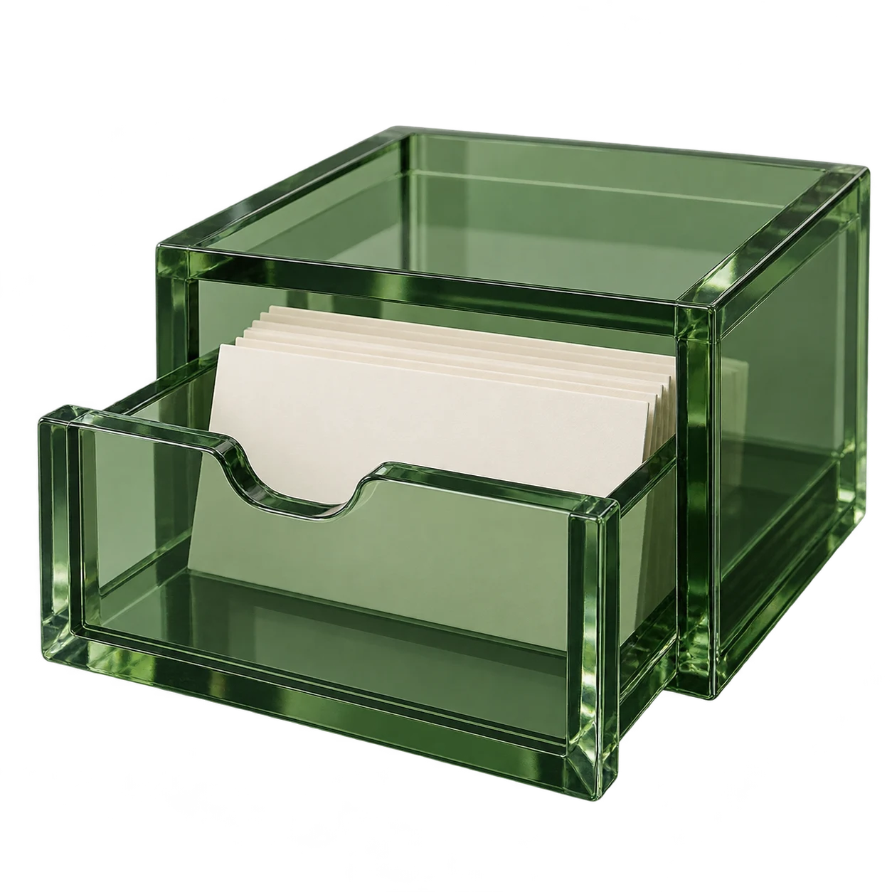

Small words.
Bigger worlds.
A few useful words, in a place you know.
Ready when you are.

Café collectionmenu
Think about this word. What does it mean?
Reveal the meaning when you are ready.You, to VocabPrepare a few useful words for ordering at a café.
Twelve words for a familiar place.A simple meaning and a sentence for each.
12practice cards
prepared
prepared
Your set is ready.
100%
One word leads to another.
Take your time. Make a little room for practice.